<h1>Life Cycle Hook</h1>

<h2>Life Cycle Hook Sequence(all hook)</h2>
  <h3 style="color: red;">&#8251;Every hook will be called when init component besides ngOnChanges and ngOnDestroy</h3>
    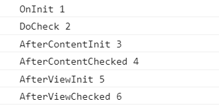

<h2 style="color: red;">&#8251;ngOnDestroy is only called before component destroy</h2>
  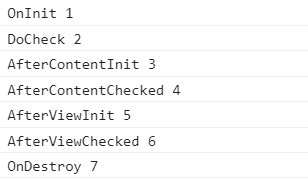

<h2 style="color: red;">&#8251;ngOnChanges respond when the input property has been bind</h2>
  <h4>input property not binding</h4>
    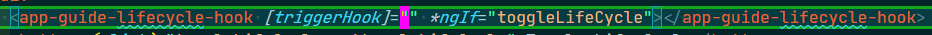
    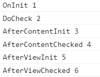
  <h4>input property binding</h4>
    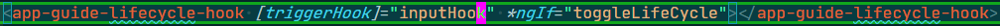
    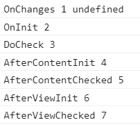
  <h4>input property binding(The value on changes by click button)</h4>
    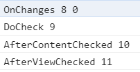

<h2 style="color: red;">&#8251;ngOnInit only respond when init component</h2>
    

<h2 style="color: red;">&#8251;ngDoCheck will respond when every DOM event executes, every value changes in the website</h2>
  <p style="color: red;">&#8251;DOM event is also checked on other component</p>
  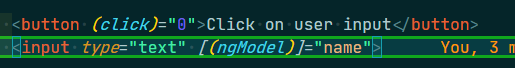
  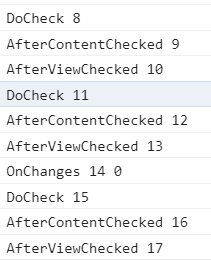
    <button (click)="triggerOutput.emit()">Click to trigger emit</button>
    <button (click)="0">Click to trigger button without function</button>
    <input type="text" (blur)="0">

<h2 style="color: red;">&#8251;ngAfterContentInit</h2>
  <h3 style="color: red;">&#8251;Respond only one times when content projected and after ngDoCheck</h3>
    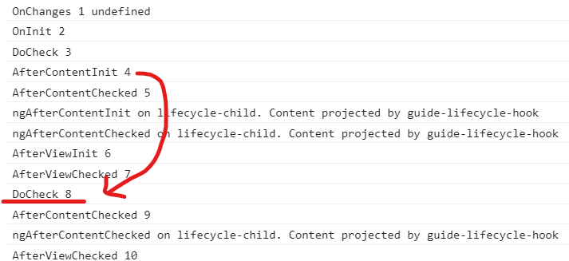
  <h3 style="color: red;">&#8251;Or respond every content projected into directive/component one times</h3>
    <app-lifecycle-child *ngIf="projectedChild % 3 !== 0">{{projectedChild}}</app-lifecycle-child><button (click)="countProject()">Click to project Child</button>
    <p>The content projected by app.component.html: <ng-content></ng-content></p>
    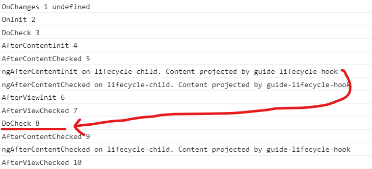

<h2 style="color: red;">&#8251;ngAfterContentChecked</h2>
  <h3 style="color: red;">&#8251;Respond every times when content projected and after ngDoCheck in website(strange respone every DOM event in website)</h3>
    <ol style="color: red;">
      <li>Related component</li>
      <li>Child component</li>
      <li>Other component</li>
    </ol>
    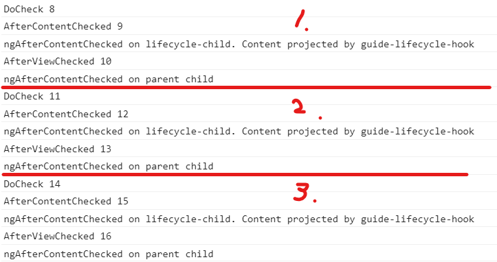

<h2 style="color: red;">&#8251;ngAfterViewInit</h2>
  <h3 style="color: red;">&#8251;Respond only one times when ViewChild Change and after ngDoCheck</h3>
    <app-lifecycle-viewchild *ngIf="toggleViewChild"></app-lifecycle-viewchild>
    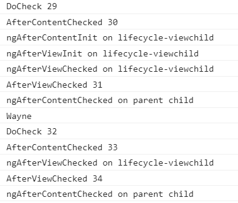
    <button (click)="clickViewChild()">Click to viewchild</button>
    <button (click)="clickViewChildButton()">Click to viewchild button</button>
